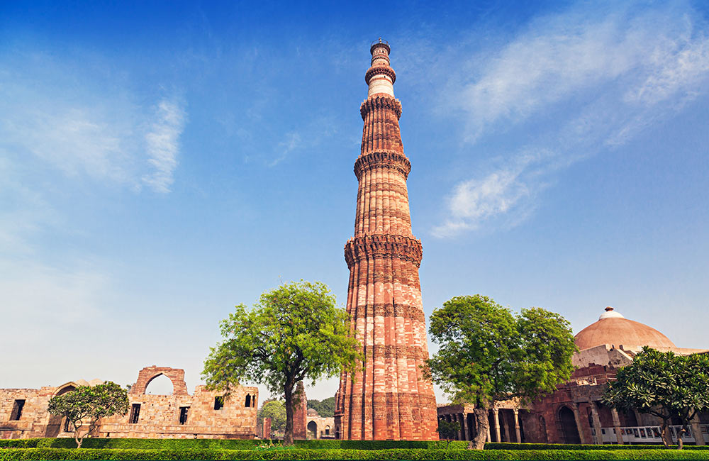
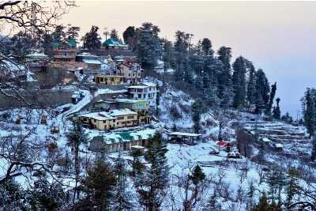

TAJ MAHAL
LOCATION: Agra, Uttar Pradesh, India
The Taj Mahal is an ivory-white marble mausoleum on the south bank of the Yamuna river in the Indian city of Agra. It was commissioned in 1632 by the Mughal emperor, Shah Jahan (reigned from 1628 to 1658), to house the tomb of his favourite wife, Mumtaz Mahal. The tomb is the centrepiece of a 17-hectare (42-acre)complex, which includes a mosque and a guest house, and is set in formal gardens bounded on three sides by a crenellated wall. The tomb is the centrepiece of a 17-hectare (42-acre)complex, which includes a mosque and a guest house, and is set in formal gardens bounded on three sides by a crenellated wall. The Taj Mahal was designated as a UNESCO World Heritage Site in 1983 for being “the jewel of Muslim art in India and one of the universally admired masterpieces of the world’s heritage”. It is regarded by many as the best example of Mughal architecture and a symbol of India’s rich history. The Taj Mahal attracts 7–8 million visitors a year. In 2007, it was declared a winner of the New 7 Wonders of the World (2000–2007) initiative

STATUE OF UNITY
LOCATION: Narmada Valley Kevadiya, Narmada, Gujarat, India
The Statue of Unity is the world's tallest statue, with a height of 182 metres (597 feet), located near Kevadia in the state of Gujarat, India. It depicts Indian statesman and independence activist Vallabhbhai Patel (1875–1950), who was the first deputy prime minister and home minister of independent India and an adherent of Mahatma Gandhi. Patel is highly respected for playing a significant role in the political integration of India. The statue is located in Gujarat on the Narmada River in the Kevadiya colony, facing the Sardar Sarovar Dam 100 kilometres (62 mi) southeast of the city of Vadodara.The project was first announced in 2010, and construction started in October 2013 by Indian company Larsen & Toubro, with a total construction cost of ₹27 billion (US$422 million).It was designed by Indian sculptor Ram V. Sutar and was inaugurated by the Prime Minister of India, Narendra Modi, on 31 October 2018, the 143rd anniversary of Patel's birth.

PANAJI
LOCATION: Tiswadi, North Goa, Goa, India
Panaji is the capital of the Indian state of Goa and the headquarters of North Goa district. Previously, it was the territorial capital of the former Portuguese India. It lies on the banks of the Mandovi river estuary in the Tiswadi sub-district (taluka). With a population of 114,759 in the metropolitan area, Panaji is Goa's largest urban agglomeration, ahead of Margao and Mormugao.Panaji has terraced hills, concrete buildings with balconies and red-tiled roofs, churches, and a riverside promenade. There are avenues lined with gulmohar, acacia and other trees. The baroque Our Lady of the Immaculate Conception Church is located overlooking the main square known as Praça da Igreja. Panaji has been selected as one of a hundred Indian cities to be developed as a smart city under the Smart Cities Mission.
KANYAYAKUMARI
LOCATION:Devi Kanya Kumari,Kanniyakumari,Tamil Nadu
Kanniyakumari,also known as Cape Comorin, is a city in Kanniyakumari district in the state of Tamil Nadu, India. It is the southernmost tip of the Indian subcontinent and the southernmost city in mainland India, and thus referred to as "The Land's End". The city is situated 90 kilometres (56 mi) south of Thiruvananthapuram city, and about 20 kilometres (12 mi) south of Nagercoil, the headquarters of Kanniyakumari district.Kanniyakumari is a popular tourist destination and pilgrimage centre in India. Notable tourist spots include its unique sunrise and sunset points, the 41-metre (133 ft) Thiruvalluvar Statue, and Vivekananda Rock Memorial off the coast.Lying at the tip of peninsular India, the town is bordered on the west, south, and east by the Laccadive Sea. It has a coastline of 71.5 kilometres (44.4 mi) stretched along these three sides.

QUTUB MINAR
LOCATION: Seth Sarai,Mehrauli,New Delhi, India
The Qutb Minar, also spelled Qutub Minar and Qutab Minar, is a minaret and "victory tower" that forms part of the Qutb complex, which lies at the site of Delhi’s oldest fortified city, Lal Kot, founded by the Tomar Rajputs. It is a UNESCO World Heritage Site in the Mehrauli area of South Delhi, India. It is one of the most visited tourist spots in the city, mostly built between 1199 and 1220.It can be compared to the 62-metre all-brick Minaret of Jam in Afghanistan, which was constructed a decade or so before the probable start of the Delhi tower.The surfaces of both are elaborately decorated with inscriptions and geometric patterns. The Qutb Minar has a shaft that is fluted with "superb stalactite bracketing under the balconies" at the top of each stage. In general, minarets were slow to be used in India and are often detached from the main mosque where they exist.
SEVEN SISTERS OF INDIA
LOCATION:East Khasi Hills District,Meghalaya, India
Nohsngithiang Falls (also known as the Seven Sisters Waterfalls or Mawsmai Falls) is a seven-segmented waterfall located 1 kilometre (0.62 mi) south of Mawsmai village in East Khasi Hills district in the Indian state of Meghalaya. The water falls from a height of 315 metres (1,033 ft) and has an average width of 70 metres (230 ft).making it one of the tallest waterfalls in India.The falls plunges over the top of limestone cliffs of the Khasi Hills only during the rainy season. In full spate, the segments stretch most of the way along the cliff. The waterfalls get illuminated by the sun and the vibrant colors of the setting sun on the waterfalls makes it beautiful.
GOLDEN TEMPLE
LOCATION:Amritsar,Punjab,India
The Golden Temple also known as the Harimandir Sahib is a gurdwara located in the city of Amritsar, Punjab, India.It is the preeminent spiritual site of Sikhism. It is one of the holiest sites in Sikhism, alongside the Gurdwara Darbar Sahib Kartarpur in Kartarpur, and Gurdwara Janam Asthan in Nankana Sahib.The man-made pool on the site of the temple was completed by the fourth Sikh Guru, Guru Ram Das, in 1577.In 1604, Guru Arjan Dev, the fifth Sikh Guru, placed a copy of the Adi Granth in Harmandir Sahib and is the prominent figure in the development of gurudwara who built it in the 16th century.The Gurdwara was repeatedly rebuilt by the Sikhs after it became a target of persecution and was destroyed several times by the Mughal and invading Afghan armies. Maharaja Ranjit Singh, after founding the Sikh Empire, rebuilt it in marble and copper in 1809, and overlaid the sanctum with gold leaf in 1830. This has led to the name the Golden Temple

OOTY
LOCATION: Nilgiris District,Tamil nadu, India
Ooty , officially known as Udhagamandalam (also known as Ootacamund abbreviated as Udhagai), is a town and a municipality in the Nilgiris district of the South Indian state of Tamil Nadu. It is located 86 km (53 mi) north west of Coimbatore, 100 km (65 mi) north west of Tirupur,128 km (80 mi) south of Mysore and is the headquarters of the Nilgiris district. It is a popular hill station located in the Nilgiri Hills. It is popularly called the "Queen of Hill Stations". It was the summer capital of the Madras Presidency.Originally occupied by the Badaga and Toda people, the area came under the rule of the East India Company at the end of the 18th century. The economy is based on tourism and agriculture, along with the manufacture of medicines and photographic film. The town is connected by the Nilgiri ghat roads and Nilgiri Mountain Railway. Its natural environment attracts tourists and it is a popular summer destination.

CHITTOR FORT
LOCATION:Chittorgarh,Rajasthan, India
The Chittorgarh,also known as Chittod Fort, is one of the largest forts in India. It is a UNESCO World Heritage Site. The fort was the capital of Mewar and is located in the present-day city of Chittorgarh. It sprawls over a hill 180 m (590.6 ft) in height spread over an area of 280 ha (691.9 acres) above the plains of the valley drained by the Berach River. The fort covers 65 historic structures, which include four palaces, 19 large temples, 20 large water bodies, 4 memorials and a few victory towers.In 2013, at the 37th session of the World Heritage Committee held in Phnom Penh, Cambodia, Chittorgarh Fort, along with five other forts of Rajasthan, was declared a UNESCO World Heritage Site, as a group called the Hill Forts of Rajasthan.

SHIMLA
LOCATION: Sri Shyamala,Shimla,Himachal Pradesh, India
Shimla is the capital and the largest city of the northern Indian state of Himachal Pradesh. In 1864, Shimla was declared as the summer capital of British India. After independence, the city became the capital of East Punjab and was later made the capital city of Himachal Pradesh. It is the principal commercial, cultural and educational centre of the state.Small hamlets were recorded before 1815 when British forces took control of the area. The climatic conditions attracted the British to establish the city in the dense forests of the Himalayas. As the summer capital, Shimla hosted many important political meetings including the Simla Deputation of 1906, the Simla Accord of 1914 and the Simla Conference of 1945. After independence, the state of Himachal Pradesh came into being in 1948 as a result of the integration of 28 princely states. Even after independence, the city remained an important political centre, hosting the Simla Agreement of 1972. After the reorganisation of the state of Himachal Pradesh, the existing Mahasu district was named Shimla.